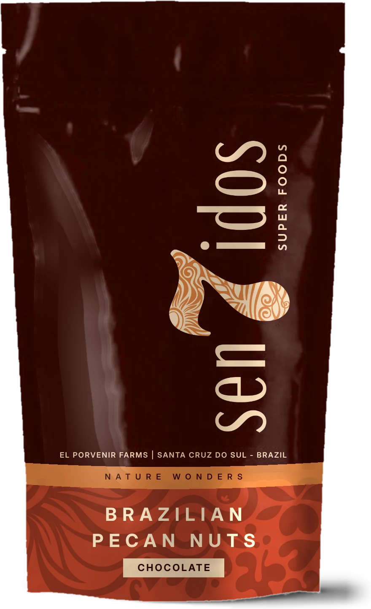

Chocolate
Deep, dark and a little bitter. The buttery pecan does the rest.
Whole Brazilian pecan halves coated in chocolate or caramel, with or without a pinch of sea salt. 100 g a bag.



Brazilian pecan nuts, dipped in chocolate and caramel
Deep, dark and a little bitter. The buttery pecan does the rest.

The same chocolate, finished with flakes of sea salt that crackle first.
Slow-cooked caramel that sets into a thin, glassy shell.
Sweet, then salty, then sweet again. The one people buy twice.
Pecans are naturally rich in unsaturated fats and fibre, and they have a soft, buttery bite no other nut quite matches. We use whole halves and coat them just enough, so the pecan stays the main event.
One bag is 100 g. Share it, keep it in your gym bag, or don't tell anyone and finish it yourself.
Put a bowl next to the cheese board. This is what we'd pour and plate with each flavour.
7 Sentidos started at our kitchen table, with a bag of pecans that didn't last the evening. Five senses weren't enough to describe that first bite, so we named it after seven.
Today we still dip every batch ourselves, in small runs, and send them across the Netherlands.
One bag of each flavour, 400 g in total. Delivered across the Netherlands in 1–3 working days.
That's €1,80 less than four separate bags.
Add the tasting set€22,00